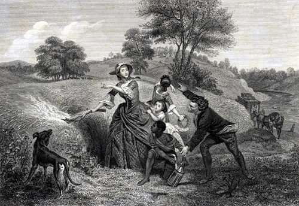

|
by Stefan Bielinski Catherine Van Rensselaer was born 1734. She was the eldest daughter of John Van Rensselaer and his wife Engeltie Livingston. Her father was lord of the lower or Claverack Van Rensselaer Manor. "Kitty" Van Rensselaer grew into a young "lady of great beauty, shape, and gentility." She was a frequent visitor to the Van Rensselaer homes in Albany and down the valley to New York where she was introduced to the sons of New York's most important families. Daughter of a landed aristocrat, this "dark and slender beauty" would be a fitting mate for a number of up-and-coming and appropriate young men. She had known Albany's Philip Schuyler for several years when they came together in a relationship that culminated in their marriage in September 1755 at the Albany Dutch Church. Approaching her twenty-first birthday, Kitty would give birth to the first of her fifteen children just five months later. At that time, her husband was an officer in the provincial army and she had moved to Albany and into the life of its most prominent native son. By end of 1761, her family now included four children. These Schuylers had removed from Albany's busiest location to a large and newly built mansion located on a hill south of and overlooking the core city. This would be Catherine Schuyler's lifelong home. For the next forty years, she would be the grand dame of Albany's most regal location where dignitaries from Baron Dieskau to George Washington were frequent visitors. As Philip Schuyler's business, military, and political careers often took him away from his growing family, Kitty and the children were frequent guests at the Patroon's and at the Schuyler estate at the Flats. She also formed a special relationship with Colonel John Bradstreet, her husband's mentor and their houseguest. Twenty years her senior, their friendship has been the subject of contemporary and historical speculation. Kitty's son was named John Bradstreet Schuyler and both mother and son were left substantial bequests following Colonel Bradstreet's death in 1774. Reaching her fortieth birthday in 1774, Kitty gave birth to three more children before 1781. Despite the stress occasioned by the War for Independence, the Schuylers spent time at both their Albany and Saratoga estates. While General Schuyler was engaged in repelling the British invasions in 1776 and 1777, his wife focused on the ongoing management of two households. The tradition of Catherine herself setting fire to their fields at Schuylerville to prevent them from being utilized by the advancing British under General John Burgoyne has been memorialized in a painting by Emanuel Leuzte (done in 1852) and reproduced widely as an engraving. After the marriage of John Bradstreet Schuyler in 1787 and his re-location to Schuylerville, his parents fell back on their elegant Albany home where they resided for the remainder of their lives. In 1800, their Albany household still included four children and eleven slaves. Catharine Van Rensselaer Schuyler died in March 1803 at age sixty-nine. Philip Schuyler died in 1804.
Detail from a portrait of Catherine Schuyler attributed to Thomas McIlworth (c. 1760s). Copy show here appears in Mary Gay Humphreys, Catherine Schuyler. Original in the collection of the New-York Historical Society. first posted: 5/31/01; last revised 6/6/01 |